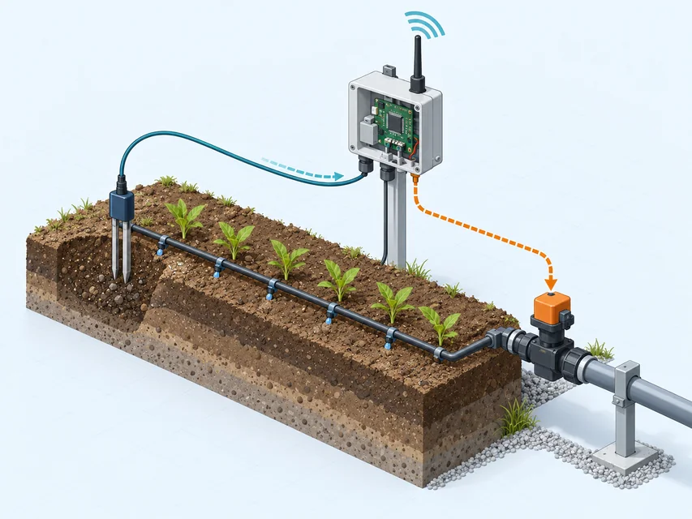
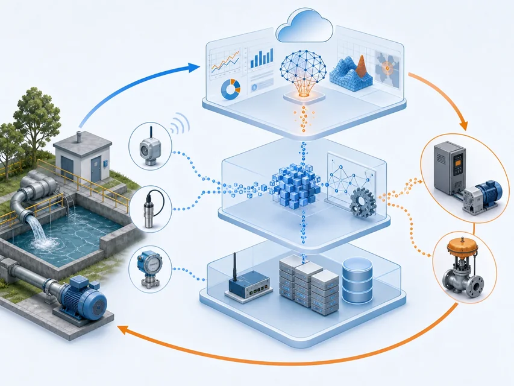
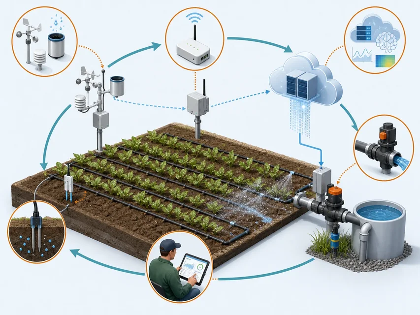

技术驱动
芯片更小，计算和通信更普及
感知、连接和处理可以嵌入更多设备
用土壤与车辆的状态数据支持灌溉与调度
 VER. 2608
Built with impress.js
VER. 2608
Built with impress.js
判断系统连接了什么、数据用来做什么，并区分监测服务和控制闭环
农田要知道哪块地缺水，工厂要在设备停机前发现异常
芯片更小，计算和通信更普及
感知、连接和处理可以嵌入更多设备
农场和工厂希望改进工作流程、减少浪费，并及时处理问题
管理人员根据现场数据决定何时灌溉或检修

测什么、在哪里处理、传给谁，要由灌溉、设备维护等任务决定
技术条件：集成电路、微电子机械系统 MEMS、计算、通信
任务条件：按地块灌溉、减少停机，明确测谁、测什么、谁行动
设备动作：测量状态、处理数据、发送结果
让设备体积、功耗和成本更适合嵌入物体
设备可处理复杂数据，也可用低成本控制器执行简单任务
让信息通过有线、无线和移动网络跨越距离传输
| 现象 | 请先判断归类 | 请写能力或目标 |
|---|---|---|
| 低功耗芯片进入传感器 | 填写类别 | 填写能力／目标 |
| 农田需要按地块灌溉 | 填写类别 | 填写能力／目标 |
| 移动网络覆盖扩大 | 填写类别 | 填写能力／目标 |
| 工厂希望减少停机 | 填写类别 | 填写能力／目标 |
技术让连接成为可能，需求决定连接是否有价值
这四类技术先后交叉发展，不能排成一条唯一的发明顺序
组合任务：认出对象、读取状态、传送数据、决定并执行
互联网、移动通信和机器到机器 M2M
条码、射频识别 RFID 和可解析的对象身份
传感器、传感器网络和执行器
泛在计算、工业 4.0 和物理信息系统
每一步都回答一个具体问题：是谁、怎样了、数据去哪、接着做什么
01
02
03
04接入与标识
→ 状态感知
→ 数据处理
→ 决策与反馈各环节可交叉，不表示历史先后或固定实现顺序
| 动作 | 请选网络、标识、感知或系统应用（可多选） | 说明这类技术做了什么 |
|---|---|---|
| 读取地块对应的编号 | 填写技术类别 | 说明作用 |
| 测量土壤湿度 | 填写技术类别 | 说明作用 |
| 把数据送到平台 | 填写技术类别 | 说明作用 |
| 按阈值打开阀门 | 填写技术类别 | 说明作用 |
编号只说明对象；测得湿度后，还需传输、判断和执行才能开阀
一块地既有位置、湿度和作物等现场状态，也有系统中的编号和数据记录
观测链：物理实体 → 感知、标识与连接 → 信息处理
反馈链：决策或服务 → 作用于对象或现实任务
本节先看地块、车辆与设备；参考模型还包括它们在信息世界中的虚拟表示
让系统知道数据对应哪个对象或事件
让不同设备、网络和平台能够交换信息
分析结果交给人员或执行器，用于改变灌溉、维护等现场任务
监测服务可以只上报状态；加入决策、执行与结果观测，才形成控制闭环
系统采集、传输并分析状态，形成决策；处理可在云端或边缘完成
传感器读取环境，执行器改变设备或过程；再次测量可观测动作后的变化
独立云平台和执行器都不是所有物联网应用的必要条件

先判断系统提供什么服务，再判断是否观察了动作后的结果
| 系统描述 | 请判断并说明依据 |
|---|---|
| 冷库温度联网记录，超限提醒值班员 | 没有执行器，能否构成物联网监测服务？ |
| 湿度低时请求开阀，设备报告已打开 | 哪些环节已有记录，还缺哪个结果？ |
| 上传数据后无人使用，也无明确用途 | 能否仅凭上传成功证明服务有价值？ |
五项特征用于分析系统能力，并非每个应用都须大规模接入或自动控制
物可以发起上报，也可以成为观测或作用对象：传感器上报，土壤被测，阀门执行
相关物在行业、区域或场景中成规模接入
结合湿度、天气和作物需求调整灌溉，减少无效浇水
既有气象、灌溉和农务管理系统共同安排浇水与巡田
让人少巡田、及时灌溉，并用用水量和作物状态检查结果
五项特征分别对应对象、覆盖、决策、协同和服务结果
沿着一次灌溉过程，检查系统做了哪些事，分别体现哪项特征
系统记录土壤和作物的状态，并向阀门发送指令
传感器测湿度，系统判断是否灌溉
阀门按指令开关，传感器再次测量土壤湿度
图中展示一次灌溉；规模和跨系统协作仍需另外核查

先看系统用了哪些信息、完成了什么动作，再解释“智能”和“高阶”
| 做法 | 灌溉例子 | 能说明什么 |
|---|---|---|
| 固定规则 | 湿度低于设定值就申请开阀 | 能按规则响应 |
| 结合现场调整 | 综合湿度、降雨预报和作物需水量调整浇水 | 利用更多条件优化决策 |
| 既有系统协作 | 气象系统提供预报，灌溉系统执行，农务系统安排巡田 | 多个系统配合完成任务 |
智能不必依赖人工智能 AI；判断高阶，要看既有系统如何共同完成任务
本例湿度低于 30% 才请求开阀；程序只模拟观测与请求，不控制真实阀门
运行环境：Python 3，无需安装第三方库
| 判断 | 这个理由为什么不够 | 还要观察或检查什么 |
|---|---|---|
| 设备多就很智能 | 缺少哪项信息？ | 写出检查办法 |
| 联网就是物联网 | 缺少哪项信息？ | 写出检查办法 |
| 能分析就有服务 | 缺少哪项信息？ | 写出检查办法 |
| 多系统接入就高阶 | 缺少哪项信息？ | 写出检查办法 |
说系统“智能”或“高阶”时，要指出它实际做了什么
核对测量与处理效果；故障、账号被盗、位置或健康数据泄露须明确处置人
| 场景 | 可能改善 | 同时要检查 |
|---|---|---|
| 农业与环境 | 分地块灌溉、节水、预警 | 测量是否准确、谁维修、调节是否伤作物 |
| 工业制造 | 提前维护、减少停机 | 谁能停机、如何撤回错误指令、谁处置事故 |
| 交通与城市 | 定位车辆、优化交通调度 | 谁能看位置、断网如何运行、谁紧急接管 |
| 家居与健康 | 按需控制、连续记录状态 | 谁能看数据、如何确认误报、何时须人判断 |
测量、传输、判断或执行中的任何一步出问题，都可能让服务失效
01
02
03
04
05对象与状态
→ 标识与感知
→ 网络与计算
→ 数据与决策
→ 执行或服务反馈| 方案描述 | 已说明什么能力 | 还要检查什么效果 |
|---|---|---|
| 土壤探头每分钟测量并上传湿度 | 写出已知能力 | 写出检查办法 |
| 平台在湿度低于设定值时发出提醒 | 写出已知能力 | 写出检查办法 |
| 控制器调低照明亮度，电表记录用电 | 写出已知能力 | 写出检查办法 |
| 农务、维修人员都能查看同一平台 | 写出已知能力 | 写出检查办法 |
不看前页，从农田缺水出发，画出测量、判断、开阀和再次测量过程